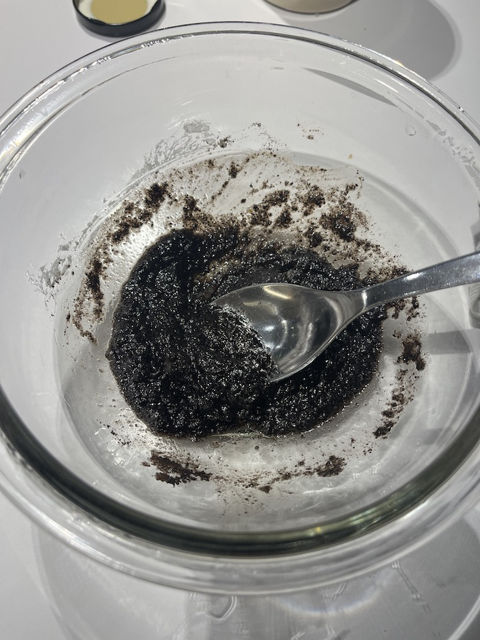
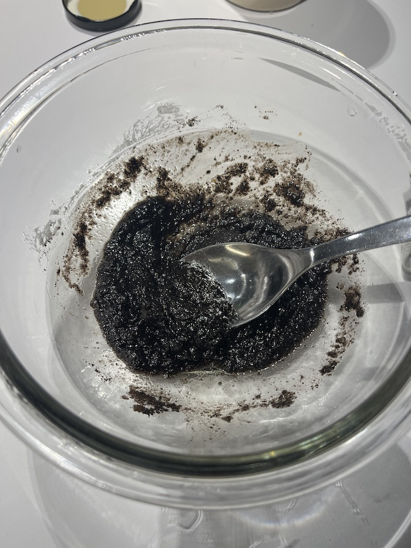

Week 9 -Molding and Casting
Make a mold (can be 1 or two sides) HARD-SOFT-HARD . 3DPRINT- CAST SILICONE- CAST SOMETHING INSIDE
You can use biomaterials to substitute the silicone or the final cast.
Experiment!
Making silicone moulds out of waste
I wanted to make something minimal waste, without using silicone for a single purpose project. I decided to approach it from a DIY, recycling perspective: using a coffee cup from itnig next door, I would place an object inside, pour gelatine over it and then slice it in half once it dried. Process:
Then I created the inside for the mould out of waste too. I wanted to make an exfoliant soap made out of ground coffee, soap waste, sugar and coconut oil.

 
